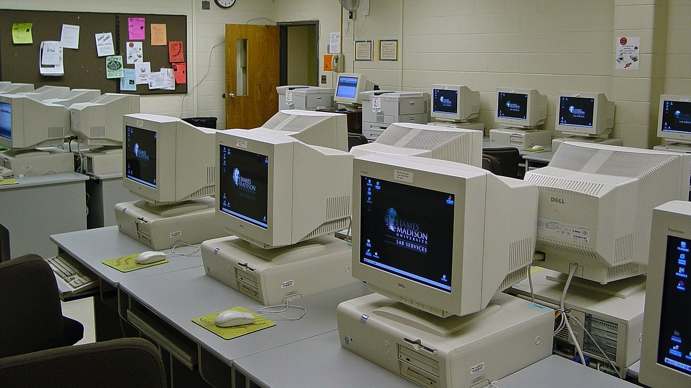
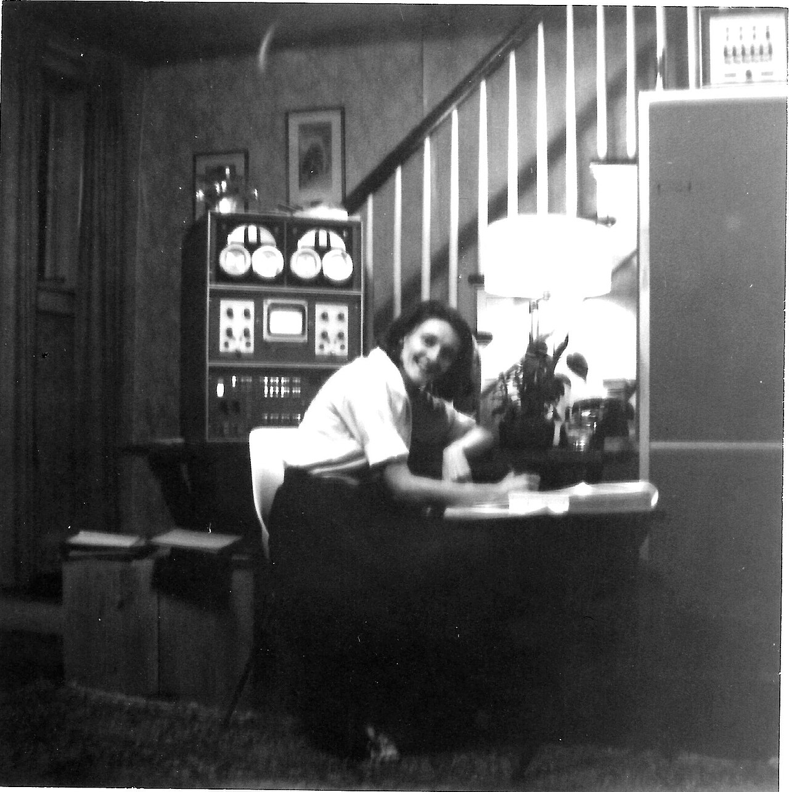

Old Computers
A Computer lab from 2002.

By
Ben Schumin
from Montgomery Village, Maryland, USA -
Maury Hall computer lab [02]
,
CC BY-SA 2.0
,
Link
One of the inventors of the LINC computer (a very early personal computer) at home with her team's invention. (The computer is the boxy thing behind her)

By Rex B. Wilkes - Mary Allen Wilkes personal archives,
CC BY-SA 4.0
,
Link